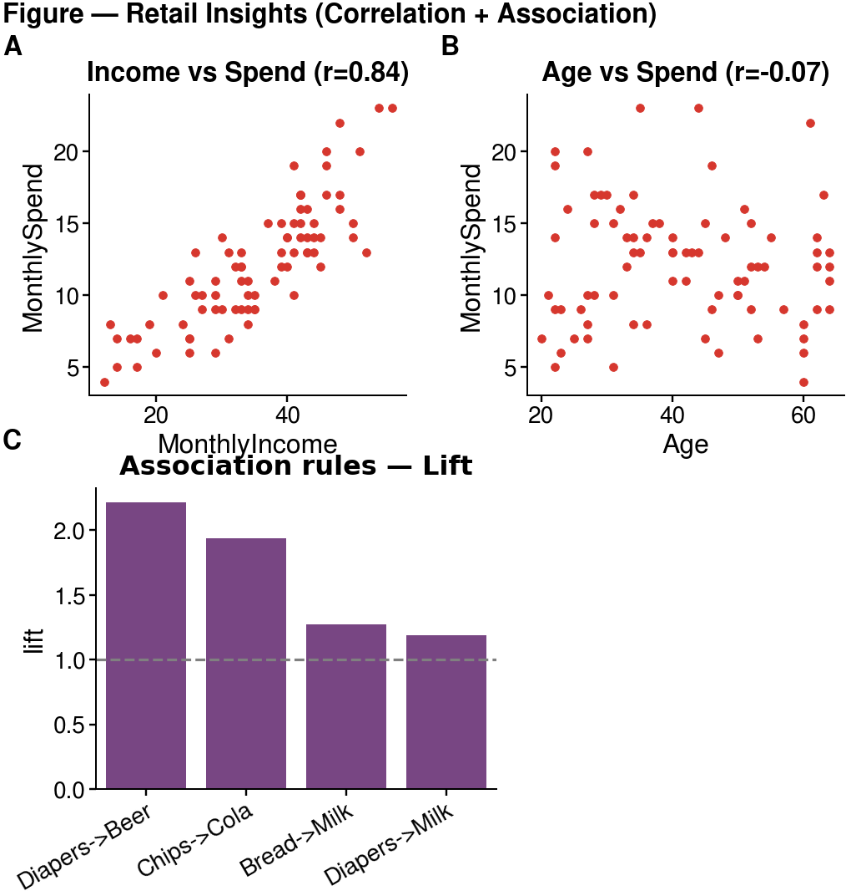

Lab 5 — Finding Relationships in Orange: Correlation & Association Rules
Goal
By the end of this lab you will apply the Week 5 ideas on finding relationships to a real retail scenario, using Orange (drag-and-drop, no code):
- Use Correlation to see which numeric customer factors relate to monthly spending.
- Use Association Rules to find which products are frequently bought together.
- Synthesise both findings into one publication-style figure with cnsplots (the library from Lab 4).
This lab is Orange only (drag-and-drop). No coding required — except the short, ready-to-run cnsplots snippet in Part D.
Business context: you are an analyst at a supermarket chain. Management wants to know: (1) which customer factors relate to spending? and (2) which products are often bought together, for combos / shelf placement? You will answer both in Orange — with Correlation (for numeric variables) and Association Rules (for products).
Prepare
- Open Orange Data Mining.
- Download the dataset
retail_customers.csv:- Direct download: retail_customers.csv
- Or from the course Drive folder: dataset folder
Dataset: retail_customers.csv
80 customers × 11 columns:
| Group | Column | Meaning |
|---|---|---|
| Identifier | CustomerID |
Customer ID (meta) |
| Numeric (for Correlation) | Age |
Age |
MonthlyIncome |
Monthly income (million VND) | |
MonthlySpend |
Monthly spend at the supermarket (million VND) | |
VisitsPerMonth |
Visits per month | |
| Products Yes/No (for Association Rules) | Diapers, Beer, Bread, Milk, Chips, Cola |
Whether the customer bought that item |
Each customer has both numeric attributes (to measure correlation) and a basket (products purchased) — so one dataset serves both techniques.
Lab overview
| Part | Content | Key widgets |
|---|---|---|
| A | Correlation — which factors relate to spending? | Correlations, Scatter Plot |
| B | Association Rules — which products are bought together? | Select Columns, Association Rules |
| C | Connect the two techniques & wrap up | — |
| D | Synthesise findings into one figure | cnsplots |
Part A — Correlation (35′)
A1. Load the data — [Follow along]
- Open Orange → File → choose
retail_customers.csv. - Check column roles:
CustomerID→ meta; numeric columns → feature; product columns → feature (categorical).
A2. Correlation matrix — [Follow along]
- Drag a Correlations widget; connect File → Correlations.
- Double-click: Orange lists correlation coefficients for every pair of numeric variables, ranked by strength.
📷 [Screenshot: the Correlations window — table of r values for numeric pairs]
Observe & note: which pair has the highest |r|? Which pair is close to 0?
A3. Verify with a Scatter Plot — [Follow along]
Remember the lesson: an r value must be checked with a scatter plot (the Anscombe trap).
- Drag a Scatter Plot; connect File → Scatter Plot (or from Correlations).
- Plot the pair with the highest |r| (e.g. X =
MonthlyIncome, Y =MonthlySpend). - Turn on Show regression line if available.
- Also plot a near-zero pair (e.g.
AgevsMonthlySpend) for comparison.
📷 [Screenshot: Scatter Plot of the highest-|r| pair, with regression line]
✍️ Part A questions (put answers in your report)
A1. Which numeric pair is the most strongly correlated? Give the r value. Is it positive or negative?
A2. Is Age related to MonthlySpend? (give r) What does that say about using Age to predict spending?
A3. On the scatter plot of the strongest pair, do the points hug the line closely? Are there any outliers far from the cloud?
A4. Business interpretation: which factor is the most reliable for predicting a customer's spending?
Part B — Association Rules (40′)
B0. Install the Associate add-on (once) — [Follow along]
The association-rule widgets are not installed by default. Go to Options → Add-ons → tick "Associate" → OK → restart Orange.
B1. Prepare the product data — [Follow along]
Association Rules work with categories. The product columns are already Yes/No (categorical), so they are usable as-is; we just need to keep only the product columns.
- Drag a Select Columns widget; connect File → Select Columns.
- Move the 6 product columns (
Diapers…Cola) to Features; send the numeric columns andCustomerIDto Ignored/Meta.
📷 [Screenshot: Select Columns — only the 6 product columns under Features]
B2. Generate association rules — [Follow along]
- Drag an Association Rules widget (Associate section); connect Select Columns → Association Rules.
- Set thresholds: Minimal support e.g. 0.10 (10%), Minimal confidence e.g. 0.50 (50%).
- Inspect the rules table: each row is a rule with Support, Confidence, Lift (and a few other metrics).
- Sort by Lift descending; focus on rules of the form
Product=Yes → Product=Yes.
📷 [Screenshot: the Association Rules table, sorted by Lift, showing high-Lift rules]
B3. Read the results — [Follow along]
- Find rules with Lift > 1 and high Confidence → these are product pairs genuinely bought together.
- Notice a rule with Lift ≈ 1 → that pair is nearly independent (not worth a combo).
✍️ Part B questions (put answers in your report)
B1. Which Product=Yes → Product=Yes rule has the highest Lift? Give its Support, Confidence, and Lift.
B2. Explain that rule in words (e.g. “customers who buy … also buy … in …% of cases, … times more than random”).
B3. Find a rule with Lift ≈ 1. What does that mean about those two products?
B4. Compare rule A → B and B → A (same two products): which metric is the same, which is different? Why?
B5. Business recommendation: based on the high-Lift rules, which product pair(s) would you shelve together / bundle into a combo?
Part C — Connect the two techniques (10′)
Both belong to the “find relationships” (Relate) family, but they differ:
| Correlation | Association Rules | |
|---|---|---|
| Used for | Numeric variables (Age, Income, Spend…) | Categories / products (Yes/No) |
| Output | A single r (direction + strength) | Rules A→B + Support/Confidence/Lift |
| Captures | Linear relationships | Any kind of co-occurrence |
✍️ Part C questions
C1. If you wanted to bring VisitsPerMonth (numeric) into the association-rule analysis, what step must you do first? (hint: the Discretize widget).
C2. In one sentence: in this dataset, which technique answers “which factors relate to spending?”, and which answers “which products are bought together?”
(Optional stretch: drag Discretize to split MonthlyIncome/MonthlySpend into Low/High, connect it into Association Rules with the products, and check for rules like {Income=High} → {Beer=Yes}.)
Part D — Synthesise a figure with cnsplots (required)
After analysing in Orange, synthesise your findings into ONE publication-style figure with cnsplots (the library from Lab 4). The figure combines both techniques: a scatter for correlation + a Lift barplot for association rules.
Sample figure for reference (yours may differ):

Panel A: the strong correlation pair (Income–Spend); Panel B: the weak pair (Age–Spend); Panel C: the Lift of association rules, dashed line = Lift threshold of 1.
Starter code (run on Colab / VS Code — edit and extend)
!pip install -q cnsplots
import numpy as np, pandas as pd, cnsplots as cns
df = pd.read_csv("retail_customers.csv")
# Compute Lift for a few rules (by counting)
def lift(A, B):
a = df[A]=="Yes"; b = df[B]=="Yes"; n = len(df); ab = (a & b).sum()
return (ab/a.sum()) / (b.sum()/n)
rules = [("Diapers","Beer"), ("Chips","Cola"), ("Bread","Milk"), ("Diapers","Milk")]
lift_df = pd.DataFrame({"rule":[f"{a}->{b}" for a,b in rules],
"lift":[lift(a,b) for a,b in rules]})
r_is = np.corrcoef(df.MonthlyIncome, df.MonthlySpend)[0,1]
mp = cns.multipanel(max_width=380, title="Figure — Retail Insights", title_fontweight="bold", loc="left")
mp.panel("A", 95, 90)
ax = cns.scatterplot(data=df, x="MonthlyIncome", y="MonthlySpend", s=6)
ax.set_title(f"Income vs Spend (r={r_is:.2f})")
mp.panel("B", 95, 90)
ax = cns.scatterplot(data=df, x="Age", y="MonthlySpend", s=6)
ax.set_title("Age vs Spend")
mp.panel("C", 120, 90, color_cycle="Bold")
ax = cns.barplot(data=lift_df, x="rule", y="lift"); ax.set_title("Association rules — Lift"); ax.set_xlabel("")
ax.axhline(1.0, color="gray", linestyle="--", linewidth=0.8) # Lift = 1 threshold
ax.set_xticklabels(ax.get_xticklabels(), rotation=30, ha="right")
cns.savefig("retail_figure.png") # use .pdf for vector output
Requirements (required; creativity encouraged)
- The figure must have at least 3 panels, including ≥1 scatter (correlation) and ≥1 Lift barplot (association rules).
- Customise it: change the scatter variables, add rules to the barplot, change the colour cycle / titles, or add a panel (e.g. a
Spend–Visitsscatter).
✍️ Part D questions
D1. Looking at the Lift barplot: which rule is furthest above the threshold of 1? Which one is near 1 (not worth a combo)?
D2. How does this figure help present results to management, compared with just reading the numeric tables in Orange?
Workflow diagram
┌─→ Correlations ─→ Scatter Plot (Part A: numeric)
File (retail) ───┤
└─→ Select Columns ─→ Association Rules (Part B: products)
(optional: Discretize to add numeric variables to rules)
📷 [Screenshot: the full connected workflow on the canvas]
What to submit — ONE PDF
Do not submit the workflow. Write a short report (Word / Google Docs), export to PDF, and submit only one PDF (Lab5_FullName_StudentID.pdf) to the course Drive folder:
Submission folder (Google Drive)
Your report must include:
- Orange screenshots: the Correlations matrix, one Scatter Plot, and the Association Rules table.
- cnsplots figure (
retail_figure.png/.pdf) synthesised in Part D — pasted into the report. - Answers to questions A1–A4, B1–B5, C1–C2, D1–D2.
- A 3–4 sentence conclusion: two key findings (one about spending, one about product combos) and a recommendation for the supermarket.
Suggested grading weights: correct operations & clear screenshots (35%) · reading/interpreting the numbers (40%) · business recommendation (25%).
Common troubleshooting
| Problem | Fix |
|---|---|
| No Association Rules widget | Install the Associate add-on, then restart Orange |
| Association Rules produces no rules | Lower Minimal support (e.g. 0.05) and/or Minimal confidence |
Rules mixed with =No |
Sort by Lift and filter to =Yes → =Yes rules for interpretation |
| Correlations is empty | Make sure numeric columns have the feature role and numeric type |
| Want to add a numeric variable to the rules | Use Discretize before Association Rules |
References
- North, M. Data Mining for the Masses — Ch. 4 (Correlation), Ch. 5 (Association Rules).
- Orange — widget catalog: orangedatamining.com/widget-catalog (Correlations, Scatter Plot, Discretize, Association Rules).
- Course lecture notes: Week 5 slides (Correlation & Association Rules).